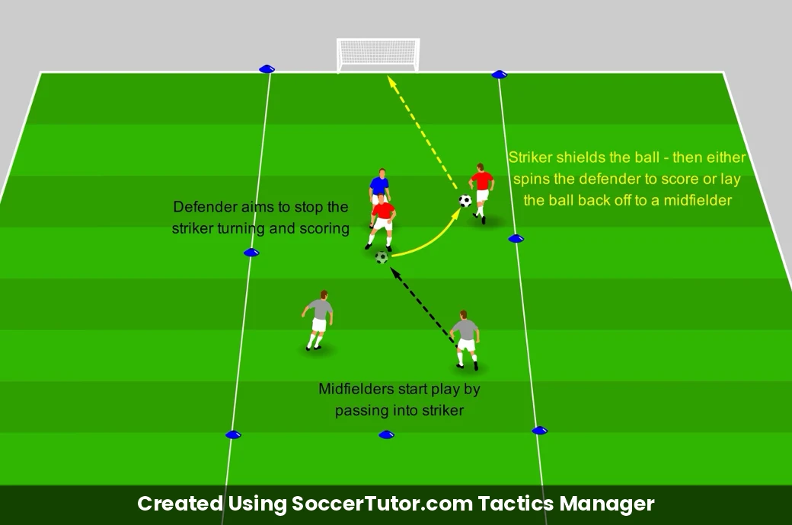
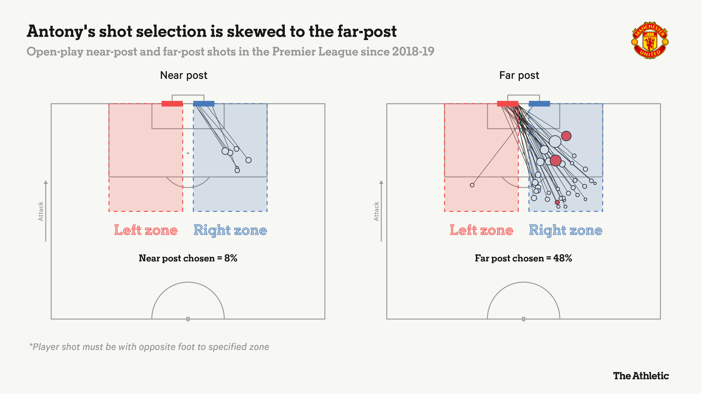
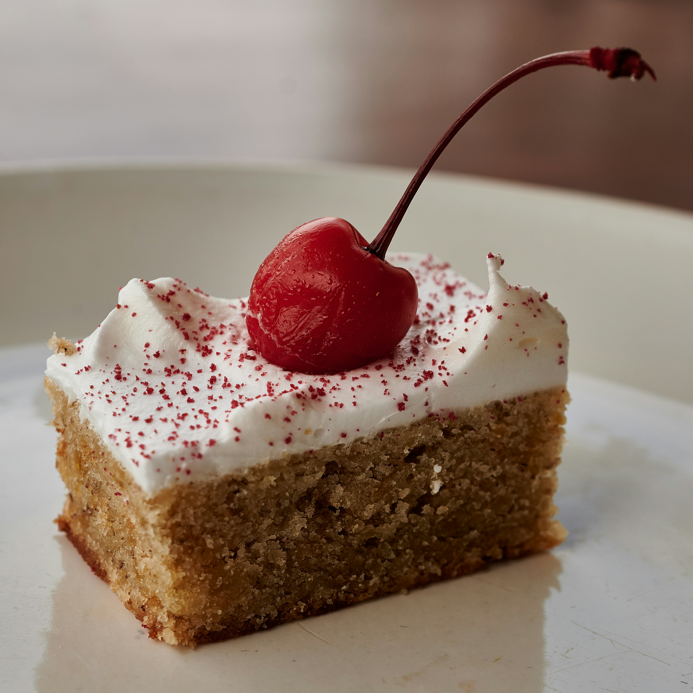
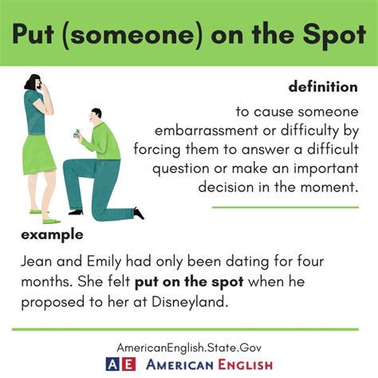
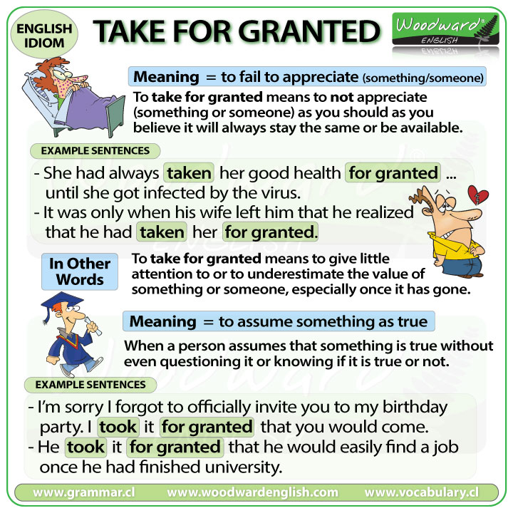
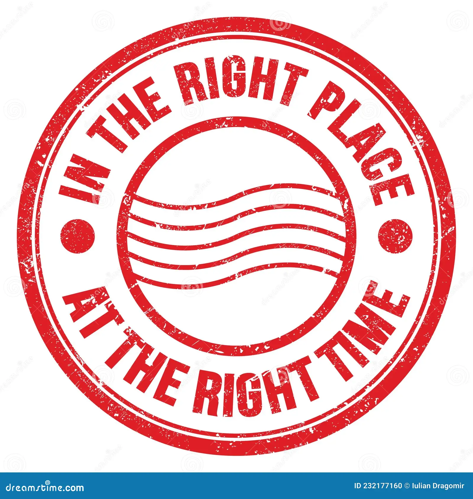
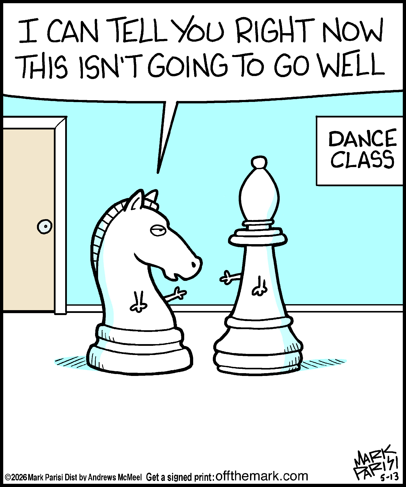
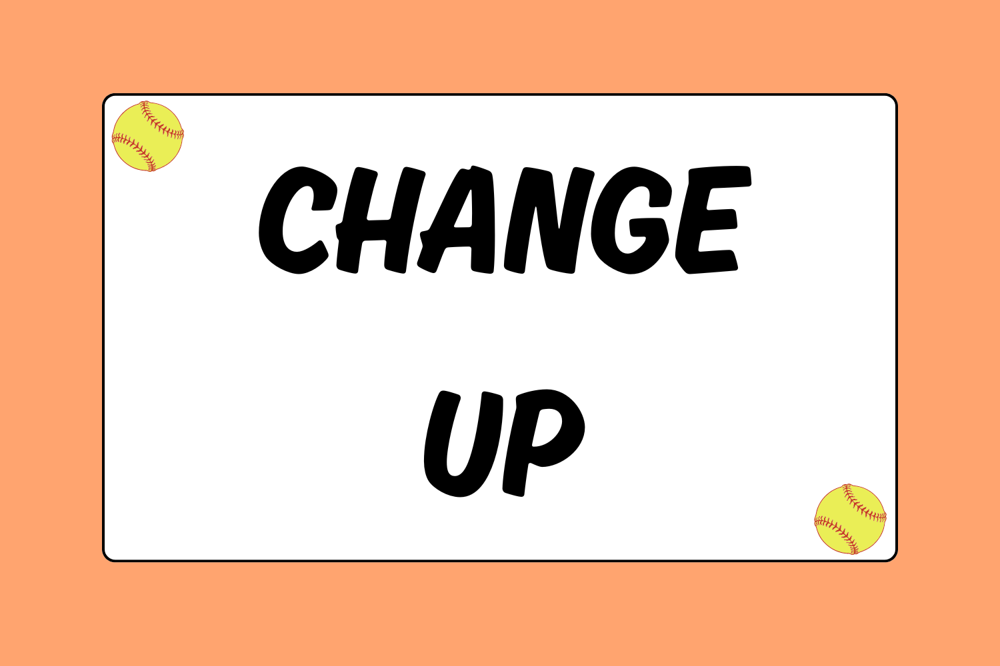

Haaland To Be Greatest Goalscorer EVER?
Analysis with Thierry Henry, Jamie Carragher & Micah Richards (CBS Sports Golazo)
Interactive Video Quiz
1. Comprehension Questions
1. What was the final score of Manchester City's match against Porto?
2. Which player did Micah Richards highlight as bringing great structural stability to the midfield?
3. Which legendary strikers did Thierry Henry and Jamie Carragher compare Haaland to?
4. What tactical improvement in Haaland's movement did the analysts discuss?
5. What key stat was highlighted regarding Haaland's Champions League record during the discussion?
2. Vocabulary Questions
6. What does the term "hold-up play" refer to in football?
7. When the pundits say a team is "knocking on the door," what do they mean?
8. What is the meaning of the idiom "cherry on the cake"?
9. What does it mean to "put someone on the spot"?
10. In sports commentary, what does the word "phenomenal" describe?
3. Grammar Questions
11. Choose the correct modal phrase used to express strong probability in hindsight: "He _____ scored a few more tonight."
12. Identify the correct conditional structure: "On another day, he _____ that chance."
13. In the sentence "I was nervous going into the game," what grammatical form is "going"?
14. What is the correct relative pronoun in: "Strikers _____ only want to score goals"?
15. Complete the sentence correctly: "I can't see him not _____ the greatest goalscorer."
4. Pronunciation & Connected Speech
16. In spoken fast British English, how is "could have" usually pronounced phonetically?
17. Which syllable carries the primary stress in the word "PHENOMENAL"?
18. In Northern/Liverpool English (as spoken by Jamie Carragher), how is the word "look" often pronounced?
19. What happens to the final /t/ sound in "out" in fast casual speech ("outstanding")?
20. Where is the main stress placed in the compound noun "COUNTERATTACK"?
10 Key Expressions from the Video








